SiAE
Sobre a Pesquisa
Sobre a Pesquisa
menu
Estatísticas e Dados de Egressos da Pós-Graduação
Principais Cargos de Egressos de INFECÇÃO HIV/AIDS E HEPATITES VIRAIS
Principais Cargos de Egressos de ALIMENTOS E NUTRIÇÃO
Principais Cargos de Egressos de ARTES CÊNICAS
Principais Cargos de Egressos de BIBLIOTECONOMIA
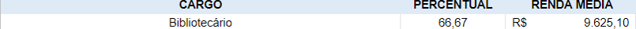
Principais Cargos de Egressos de CIÊNCIAS BIOLÓGICAS (BIODIVERSIDADE NEOTROPICAL)
Principais Cargos de Egressos de DIREITO
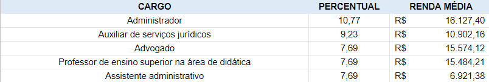
Principais Cargos de Egressos de EDUCAÇÃO
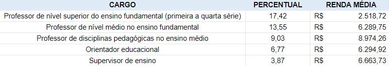
Principais Cargos de Egressos de ENFERMAGEM
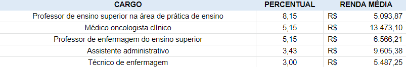
Principais Cargos de Egressos de ENFERMAGEM E BIOCIÊNCIAS
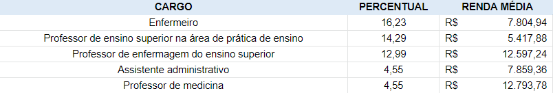
Principais Cargos de Egressos de ENSINO DE ARTES CÊNICAS
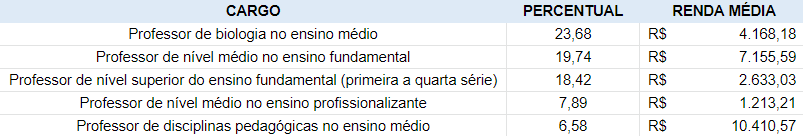
Principais Cargos de Egressos de GESTÃO DE DOCUMENTOS E ARQUIVOS
Principais Cargos de Egressos de HISTÓRIA
Principais Cargos de Egressos de INFORMÁTICA
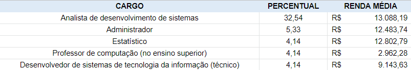
Principais Cargos de Egressos de MATEMÁTICA EM REDE NACIONAL
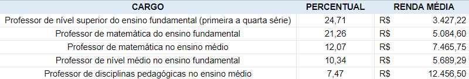
Principais Cargos de Egressos de MEDICINA
Principais Cargos de Egressos de MEMÓRIA SOCIAL
Principais Cargos de Egressos de MUSEOLOGIA E PATRIMÖNIO
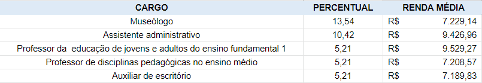
Principais Cargos de Egressos de MÚSICA
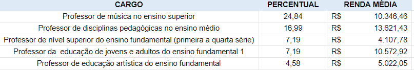
Principais Cargos de Egressos de NEUROLOGIA
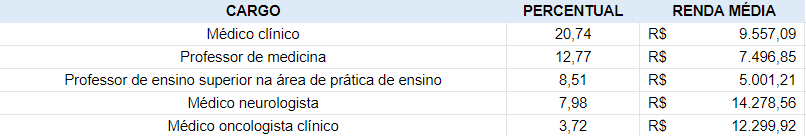
Principais Cargos de Egressos de SAÚDE E TECNOLOGIA NO ESPAÇO HOSPITALAR
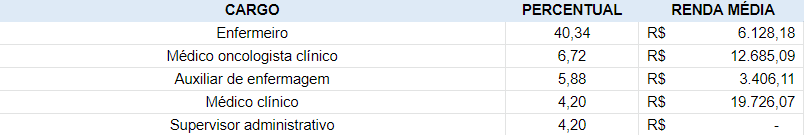